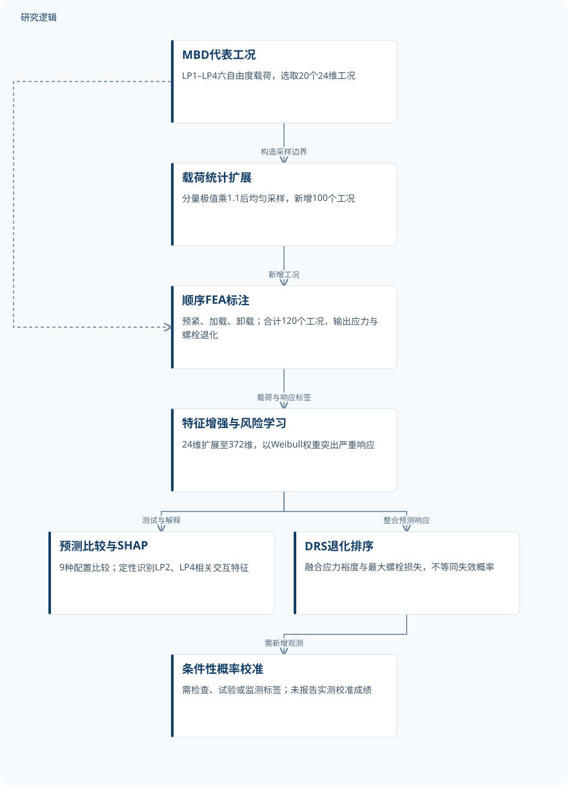
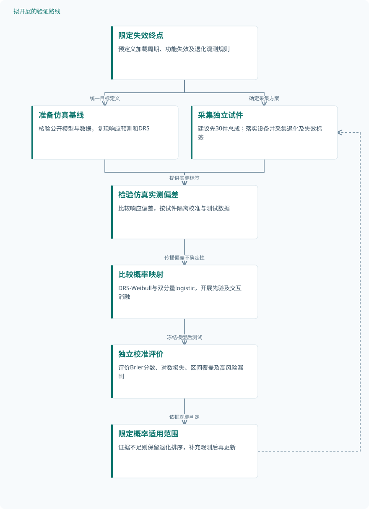

论文精读
结合贝叶斯校准的力学启发风险感知多轴结构可靠性学习
Mechanics-informed risk-aware learning for multiaxial structural reliability with Bayesian calibration
精读更新 2026-10-03 16:05 · 依据论文全文整理
多轴载荷下，转向节的材料过应力与螺栓预紧力损失可能沿不同路径发展，平均预测准确并不意味着危险工况被可靠识别。这项研究将力学启发特征、风险加权学习与统一退化评分结合，在120个有限元工况上显著改善线性回归预测。其阅读价值不仅在于精度提升，更在于厘清三个层次：怎样学习耦合响应、怎样突出严重退化，以及退化评分距离真实失效概率还有多远。
文章目录
载荷覆盖充分，为何仍可能漏掉危险响应
螺栓连接转向节的脆弱性并非单一应力指标能够完整描述：多轴力—力矩耦合与接触重分布，既影响材料应力，也影响卸载后的连接预紧力。研究选取的20个基线工况中，峰值应力为223.09–248.42 MPa，而同一螺栓在Case 2中损失超过20%、在Case 18中仅损失0.13%，说明连接退化对载荷路径高度敏感。
另一个难点是响应分布不均衡：覆盖载荷空间，并不等于覆盖严重退化区域。大量低、中响应样本容易主导均匀训练损失，使少数安全关键样本被弱化；因此，本文同时处理非线性表达不足与危险响应关注不足，而不是单纯增加模型复杂度。
以372维特征表达耦合，以风险权重突出上尾
研究从LP1–LP4提取六自由度载荷，形成24维输入，并通过二阶多项式与正、余弦项扩展至372维。其组成是24个原始特征、300个二阶特征和48个谐波特征；这是力学启发的特征工程，不是直接约束平衡方程的求解方法。谐波缩放因子K与输入标准化方式在给定资料中缺失，影响复现。
风险权重采用ωrisk(z)=1+αr{1−exp[−(z/λ)^k]}，平滑提高严重响应样本的训练贡献，四个螺栓的加权损失分别计算后求和。式(14)—(16)再将屈服至极限强度间的应力退化与最大螺栓损失比例合成为DRS=1−(1−Dres)(1−Dpre)。训练中的Weibull权重与DRS都不是已校准的失效概率，概率映射仍需要失效观测。
原研究：从多轴仿真响应到退化评分


实线流程呈现已完成的仿真预测与评分；概率校准节点明确标为依赖新增观测的条件性步骤。
下载 SVG图示关系说明
实线表示相邻阶段的信息流，虚线表示跨阶段联系或反馈。
MBD代表工况 → 载荷统计扩展：构造采样边界；MBD代表工况 → 顺序FEA标注：原始工况；载荷统计扩展 → 顺序FEA标注：新增工况；顺序FEA标注 → 特征增强与风险学习：载荷与响应标签；特征增强与风险学习 → 预测比较与SHAP：测试与解释；特征增强与风险学习 → DRS退化排序：整合预测响应；DRS退化排序 → 条件性概率校准：需新增观测
120个仿真工况支撑预测比较，而非实物验证
数据由20个MBD代表工况及100个新增载荷向量组成，新增向量按各分量极值乘1.1后的边界均匀采样，并逐一执行FEA，而非插值响应标签。有限元流程依次施加60 kN初始预紧、施加多轴外载并卸载，输出峰值von Mises应力及四个螺栓的残余预紧力退化。120个工况不是120件实物，372维特征也不代表新增独立样本。
比较覆盖MLR、RF、XGBoost、BP-NN各自的基线与FA-RA版本，以及RA-only BP-NN，共9种配置。流程图给出85%训练、15%测试，原文说明两者均含上尾响应，但具体集合数量、随机种子、重复训练和防泄漏措施未报告；FA-only结果也未提供。评价包括RMSE、MSE、MAE、MAPE、RAE、R²和RMO，缺少完整消融限制了模块贡献的分离。
| 验证任务 | 样本与规模 | 主要结果 |
|---|---|---|
| 顺序FEA数据构建与转向节应力预测比较 | 20个原始工况与100个新增工况合计120个FEA样本；新增工况逐一仿真标注。独立实物试件数、重复仿真数未报告。 | MLR测试RMSE由9.96降至3.22，R²由0.37升至0.96；基线BP-NN为4.49、0.91。FA-RA BP-NN的RMO为0.13。 |
| 四个螺栓卸载后预紧力退化预测 | 每个工况含四个螺栓输出，不能计为四个独立试件；逐螺栓有效样本数及高损失样本数未报告。 | FA-RA MLR整体R²=0.90，多数测试样本位于±15%误差带内；原文定性称稀少高损失响应预测保持稳定。 |
| DRS复合退化评分与脆弱性排序展示 | 评分展示覆盖120个载荷样本；各风险区间数量、工况独立性及重复工况数未报告。 | 多数样本DRS较低，少数随单项或复合退化增加而升高；贝叶斯logistic与Weibull校准是条件性后续路径。 |
展开数据来源、分组、对照与验证边界
顺序FEA数据构建与转向节应力预测比较
数据来源。MBD提取四个载荷点的六自由度载荷；FEA执行60 kN预紧、加载与卸载，提供峰值von Mises应力标签。
分组与工况。四类模型各设原始特征均匀权重基线及FA-RA配置，另设RA-only BP-NN，共9种配置；具体事件分组数量未报告。
数据划分。流程图标注85%训练、15%测试，均覆盖主要响应范围并含上尾样本；具体数量、验证集及重复划分未报告。
对照与消融。MLR、RF、XGBoost、BP-NN原始输入基线；RA-only BP-NN提供部分消融，未提供FA-only对照结果。
评价指标。RMSE、MSE、MAE、MAPE、RAE、R²、RMO及±5%误差带；应力标签单位为MPa，误差指标单位未明确报告。
验证边界。缺少完整模型成绩、重复运行变异及高风险子集规模；载荷相关性、物理可行性筛查与包络外验证未报告。
四个螺栓卸载后预紧力退化预测
数据来源。同一120工况数据池；式(3)按初始与残余预紧力之差除以初始值，乘100%定义螺栓退化。
分组与工况。四类模型的基线与FA-RA版本，以及RA-only BP-NN；联合目标对四个螺栓分别加权后求和。
数据划分。总体流程为85%训练、15%测试；该任务是否与应力任务采用完全相同工况划分及具体集合数量未报告。
对照与消融。原始特征均匀权重基线与完整FA-RA比较，另有RA-only BP-NN；逐螺栓基线数值及FA-only结果未提供。
评价指标。报告整体R²及±15%相对误差带；跨螺栓汇总方法、学习指标采用百分数或比例及完整指标值未报告。
验证边界。缺少逐螺栓误差与高损失区域定量成绩，不能判断整体指标是否掩盖局部误差；独立实测验证未报告。
DRS复合退化评分与脆弱性排序展示
数据来源。整合预测临界应力与四个螺栓的预紧力损失比例；沿用同一仿真数据，不是新增试验或外部验证集。
分组与工况。考察应力裕度退化、最大螺栓退化及两者共同升高的状态；分组阈值和各组数量未报告。
数据划分。未报告120个评分是否仅来自独立测试预测，或包含训练样本；专门的外部评分验证集未报告。
对照与消融。与单独应力或预紧力指标作定性讨论；定量排序基线、评分消融及外部失效标签未报告。
评价指标。DRS=1−(1−Dres)(1−Dpre)，范围为[0,1]；屈服与极限强度数值、排序评价指标未报告。
验证边界。没有实测失效概率校准结果、后验参数或校准指标，不能确认DRS与真实失效概率一致或验证系统可靠性。
预测增益明确，概率可靠性仍待观测闭环
应力测试中，MLR的R²由0.37升至0.96，RMSE由9.96降至3.22，原文报告下降67%，多数预测位于±5%误差带内；这些RMSE的单位未明确报告。基线BP-NN已达到R²=0.91，增强策略对强模型更突出残差平衡与上尾稳定性，FA-RA BP-NN的RMO为0.13。螺栓预测的FA-RA MLR整体R²为0.90，多数测试样本位于±15%误差带内，但逐螺栓和高损失子集结果不足。
SHAP定性指出LP2、LP4相关交互项主导预测，但这不能代替载荷路径的因果验证。120个样本的DRS展示了复合退化排序，却没有外部失效标签、后验参数或概率校准成绩；式(1)、式(2)中的可靠性乘积还需要核查依赖条件。作者声明公开数据与代码仓库，但仓库内容未在所给资料中独立核验，跨结构泛化、实物可靠性和在线维护均不能视为已验证。
从这篇论文走向下一项研究
以下为结合研究方向提出的候选方案，实验设计与预期目标有待验证。
建立实测退化—失效标签闭环，校准DRS概率含义
问题与短板。当前DRS仅融合仿真预测响应，缺少观测失效标签。建议先限定加载周期、失效终点和适用总体，区分预紧力损失、材料超限与功能失效，避免把评分阈值直接当作概率。
改进机制。先用实测应力或残余预紧力检验仿真偏差，再分别建立DRS标量Weibull与退化分量logistic校准。通过后验预测传播响应误差与参数不确定性，并检验系统可靠性计算中的失效依赖。
候选创新。候选创新是将连接退化观测、代理模型偏差与概率校准组成可审计闭环，而非宣称提出贝叶斯校准本身。重点检验保留两个退化分量，是否比压缩为DRS更能区分不同失效路径。
数据与实验设计。建议设计为先采集30件独立总成作可行性试验，按载荷路径和初始预紧水平分组，再据失效事件率调整规模。公开仿真资料可用于准备；实测标签需新采集，设备需另行落实，测试按试件隔离。
对照与消融。比较单一应力、最大预紧力损失、DRS及双分量概率模型；消融交互项、仿真偏差修正和先验设置。保留独立试件测试集，对无失效及观察期结束样本明确处理规则。
成功判据。预注册Brier分数、对数损失、校准曲线与高风险漏判率，以独立测试上的改善及区间不确定性为判据。检查概率区间覆盖和分组校准，不能仅凭训练拟合或R²宣布成功。
风险与替代方案。失效事件少可能使后验依赖先验，破坏性试验也可能成本过高。替代方案是先验证连续退化预测并开展敏感性分析，结合有删失信息的随访；证据不足时保留风险排序，不输出可信失效概率。
用相关性约束与主动采样检验上尾泛化
问题与短板。逐分量均匀采样没有明确保留真实载荷相关性，随机划分也未证明跨事件泛化。建议把载荷可实现性与风险区域覆盖分开评价，避免模型只在同一仿真包络内获得漂亮成绩。
改进机制。从MBD载荷历程构造相关性保持的候选工况，施加可核验的载荷传递约束，再按预测不确定性与退化严重度选择FEA查询。每轮保留随机探索份额，降低代理模型漏掉未知危险区域的风险。
候选创新。已检索的2024年物理约束CTGAN论文摘要支持受约束生成的思路；2026年多轴疲劳特征工程论文摘要支持领域特征建模。候选创新是将这些思路与连接上尾主动采样结合，而非把已有技术称为新方法。
数据与实验设计。建议在公开120工况资料可获取的前提下复现起点，另新增120个FEA工况，等预算比较均匀、相关性保持与主动采样三组。公开仓库需先核验；新事件历程需补充采集或仿真，最终按事件留出测试。
对照与消融。固定模型容量与调参预算，比较四类回归基线，并补齐无FA无RA、仅FA、仅RA、FA-RA四格消融。另比较原始载荷与物理描述特征，防止采样收益和特征收益相互混淆。
成功判据。以等FEA预算下的事件留出误差、上尾低估率和最差螺栓误差为主要判据，同时报告总体指标。通过重复采样检验稳定性，并要求危险区改善不以明显牺牲普通工况性能为代价。
风险与替代方案。生成工况可能不可实现，主动采样也可能追逐模型误差而非真实风险。替代路径是直接从完整MBD轨迹选点，设置可行性筛查与查询停止条件；包络外性能不足时明确缩小模型适用域。
研究建议：以独立试件检验DRS概率校准


对应第一条路线，展示拟议的数据采集、偏差修正、概率比较与外部评价，不代表已完成实验或预期增益。
下载 SVG图示关系说明
实线表示相邻阶段的信息流，虚线表示跨阶段联系或反馈。
限定失效终点 → 准备仿真基线：统一目标定义；限定失效终点 → 采集独立试件：确定采集方案；准备仿真基线 → 检验仿真实测偏差：提供仿真响应；采集独立试件 → 检验仿真实测偏差：提供实测标签；检验仿真实测偏差 → 比较概率映射：传播偏差不确定性；比较概率映射 → 独立校准评价：冻结模型后测试；独立校准评价 → 限定概率适用范围：依据观测判定；限定概率适用范围 → 采集独立试件：不足则补充观测